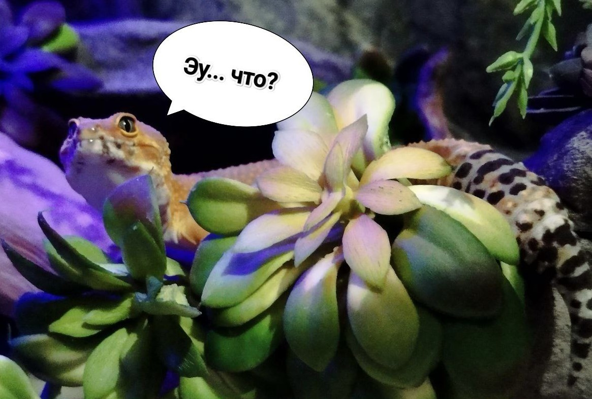
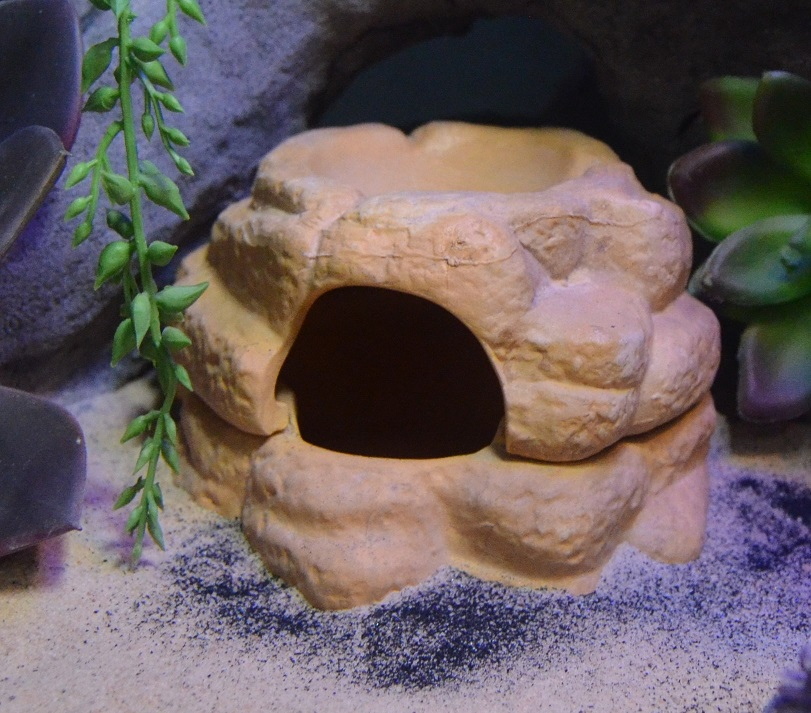

Эублефар - кто это?

Eublepharis macularius - Леопардовый геккон входящий в подсемейство Eublepharidae.
Эублефар является полупустынной ящерицей. В природе эти гекконы населяют скалистые предгорья и полузакрепленные пески. Их родина – Ирак, Южный Иран, Афганистан, Пакистан, Туркменистан и Индия(наиболее часто встречается от Восточного Афганистана на юге через Пакистан до Белуджистана и на восток до Западной Индии), также распространены в Восточной и Юго-Западной Азии.
Эублефар: содержание и уход в домашних условиях
Эублефары или леопардовые гекконы — идеальные рептилии как для начинающих, так и для опытных террариумистов. В домашних условиях это послушный и легкий в уходе питомец. Уже более 30 лет эублефаров разводят в США и Европе.
Пятнистые эублефары – спокойные и покладистые питомцы. Они абсолютно не агрессивны, быстро привыкают к людям и очень привязываются к своему владельцу. А еще они часто просятся на руки к хозяину и могут засыпать прямо на ладошках, словно милые котята.
У эублефаров дружелюбный характер, но проявляют они его не сразу. В первые дни после покупки могут показаться слегка агрессивными, что связано со стрессом и адаптацией в чужом доме. Однако уже через несколько дней ящерица привыкнет к новому месту обитания и покажет свой добрый и покладистый характер.

Оборудование для содержания эублефара
Минимальный размер террариума для одного геккона: 30×30×30 см. Однако в идеале желательно 45×45×30 см и больше.
Температура в террариуме делится на две зоны: теплая треть и прохладная зона.
Днём, в теплой зоне, температура должна быть 30-33 градуса. В противоположном, холодном углу — 23-26 градусов. Для обогрева в террариуме удобнее всего использовать термокамень или термомат. В случае использования термомата температура регулируется слоем субстрата. Если требуется увеличить температуру в теплой зоне, то нужно уменьшить слой песка в зоне прогрева. Либо (а на самом деле более желательно) устанвить специальный термоконтроль, который будет самостоятельно регулировать необходимую температуру в выбранном диапазоне в теплой зоне. В последнем случае можно вовсе не беспокоиться о том, что геккон замерзнет в холодные деньки.
Ночью желателен перепад температур, поэтому обогревательные и осветительные приборы нужно отключать.
Эублефары очень любят копать и рыть, поэтому в качестве субстрата используют натуральные пустынные грунты, такие как песок (Exo-Terra Desert Sand) или глина (Exo-Terra Stone Desert).
В террариуме должны быть установлены укрытия. Они могут быть выполнены в виде камня. Можно соорудить пещеры и норы из специальных субстратов (таких как Exo-Terra Stone Desert). Дополнительно размещают коряги, камни и декорации, по которым рептилия может перемещаться.
Для создания естественных природных условий в качестве освещения в террариум устанавливают лампы с не очень ярким светом, так как Эублефары являются ночными гекконами, а это значит какие-либо специальные лампы им не нужны. Исключение может быть только в том случае, если у рептилии рахит, тогда устанавливается лампа с ультрафиолетом UVB. На ночь так же можно поставть ночную лампу, что светит тусклым и мягким голубым светом, это позволит наблюдать за рептилией ночью, а так же создат естетственное освещение аля свет "луны". Так же необходимо учитывать, что ночью нет кромешной темноты, поэтому ночная лампа имеет место быть.
Световой день в террариуме обычно составляет 12-14 часов.
Необходимо использовать террариум только с проверенной системой вентиляции, которая способствует хорошему воздухообмену и препятствует запотеванию стекол. Лучшие из таких террариумов представленны под фирами Exo-Terra и NomoyPet.

Влажность в террариуме поддерживается только в период линьки. Когда эублефар готовится к линьке (посветлел и помутнел окрас), под укрытием увлажняется песок. Так делается каждый раз с наступлением этого периода. Если же есть специальные влажные камеры Exo-Terra, то необходимость в дополнительном увлажнении почвы отпадает. Почему именно они? Потому что сделаны из керамики и имеют углубление сверху для воды. Из-за этого внутри такой влажной камеры всегда влажность повыше, чем снаружи.
Леопардовые гекконы пьют воду, лакая как котики из миски, поэтому в террариуме должна быть размещена маленькая поилка, которую регулярно пополняют свежей питьевой водой. Желательно менять воду каждый день.